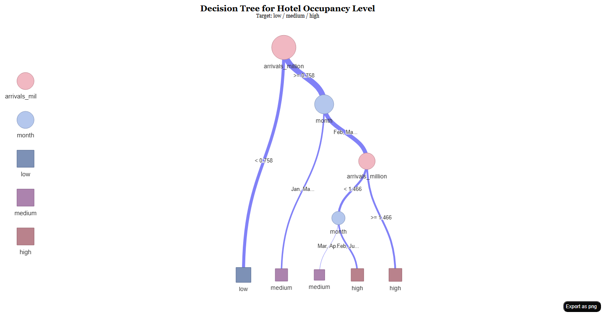

Project Poster
Singapore Tourism Recovery Through Time-Series Visual Analytics
One integrated workflow for exploring demand, grouping recovery trajectories, and forecasting source-market arrivals using Singapore tourism time series.
Xi Zixun - Wang Zhuoran - Jin Qinhao
Shared arrivals backbone Visual analysis + clustering + forecasting Quarto website + modular Shiny app Singapore tourism recovery
Why This Project
Singapore tourism did not recover as one uniform curve. Different source markets returned at different speeds, while hotel utilisation and stay behaviour reacted with their own lag. Static totals hide this structure.
We therefore reframed the project as a time-series decision workflow:
- reveal turning points and seasonal structure
- group markets with similar recovery paths
- forecast short-term demand while preserving interpretation
End-to-End Workflow
Time Series Explorer
The explorer establishes the narrative baseline: a visible collapse in 2020, staggered reopening, and an uneven return of source-market demand. It also connects demand to hotel utilisation, showing that recovery in arrivals is meaningful only when it moves with broader tourism performance.
- China’s contribution shows both the magnitude of the pandemic shock and the asymmetry of the recovery path.
- Hotel occupancy still tracks visitor demand positively, even though the rebound is phased rather than immediate.
- The explorer is the starting point for both clustering and forecasting, because it exposes seasonality before modelling begins.


Clustering Recovery Trajectories
Clustering moves the project from “what happened” to “which markets behave similarly.” Instead of clustering individual months, the final module clusters country trajectories, which is more consistent with the shared time-series backbone.
- The reduced-space scatter separates recovery shapes into three clear groups, with a mean silhouette around 0.63.
- The timeline highlights that the tourism system moved through persistent phases rather than random monthly noise.
- The elbow diagnostic supports a compact solution that is interpretable enough for the Shiny interface.


Forecasting Source-Market Demand
The forecasting module follows the Chapter 19/20 logic from R for Visual Analytics: inspect the time path, check seasonal structure, build a time-aware split, and compare benchmark versus model-based forecasts. The latest implementation also supports a lighter fallback route so the prototype remains runnable in shared environments.
- The selected country series retains strong monthly seasonality after the pandemic shock.
- Decomposition makes the structural break explicit, which helps justify a forecasting workflow instead of a static regression treatment.
- Seasonal Naive, ETS, and ARIMA are compared on the same holdout window so forecast quality remains interpretable.


Shiny App Delivery
The final system is not just a report. It is delivered as a coordinated website-plus-Shiny experience:
- the website documents the data contract, prototypes, and usage logic
- the Shiny app exposes explorer, clustering, and forecasting as one flow
- package audit and smoke tests support deployment quality
This is what turns the project from a set of plots into a reusable visual analytics product.
Supplementary Modelling Study
The repository also preserves Jin Qinhao’s earlier decision-tree and random-forest work as an archive. It is not part of the final live module contract, but it remains useful as a supplementary modelling reference.


Next Step
- Extend the forecasting panel to more source markets.
- Add deployment-ready public hosting for the Shiny module.
- Turn cluster interpretation into reusable market personas for decision-making. ::: ::: :::
:::